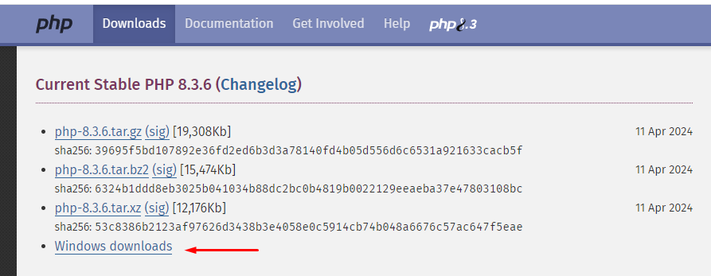

Trata-se de uma linguagem de script criada para comunicações do lado do servidor. Consequentemente, ela é capaz de lidar com várias funções de backend como coletar formulários de dados, gerenciar arquivos do servidor, modificar bases de dados e muito mais. Apesar do PHP ser considerado uma linguagem de scripts de propósito geral, ela é mais usada para desenvolvimento na web. Isso acontece por causa de um de seus recursos mais notáveis: a habilidade de ser integrado num arquivo HTML. Outro benefício desse recurso em particular é quando você tem que usar marcações HTML repetidamente. Ao invés de reescrevê-los de novo e de novo, apenas implemente o código num arquivo PHP. Quando precisar usar o HTML, insira o arquivo PHP e está tudo pronto. Um exemplo de uma página PHP pode ser encontrado no Facebook. Abra a página inicial e você pode ver que a URL termina com .php (facebook.com/home.php). Em outras palavras, essa página é criada com um arquivo php (home.php) que contém uma mistura de código de pré-processador de hipertexto e tags HTML.

php -S localhost:80 -t "C:\xampp\htdocs\teste"
Faça seu próprio código:
<?php
echo "Olá," . " mundo!";
//Olá, mundo!
?>

Quando quiser criar um novo projeto e executa-lo crie um arquivo dentro da pasta 'htdocs' com o seu projeto e mantenha o xamp no 'start'